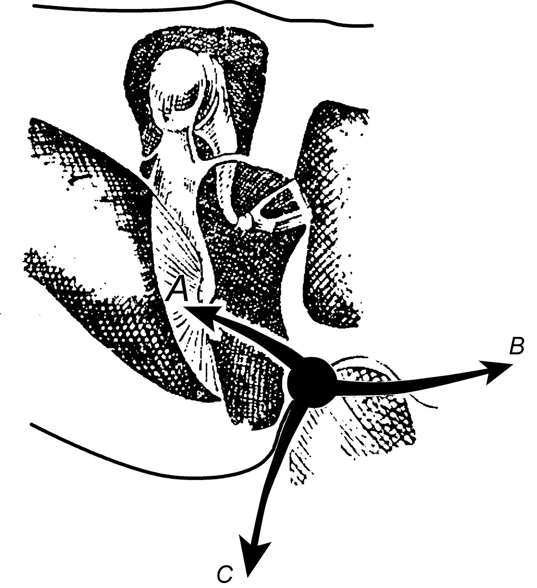
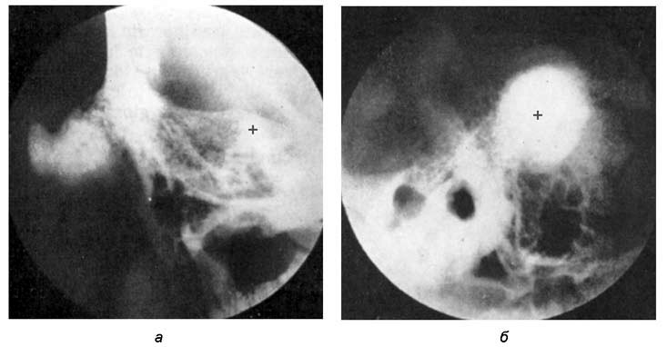
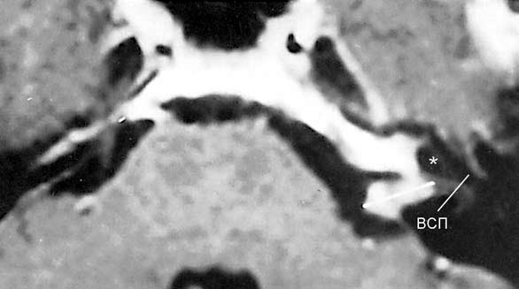
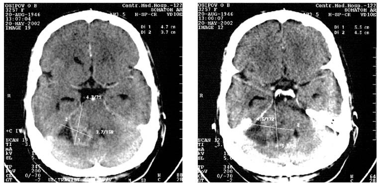
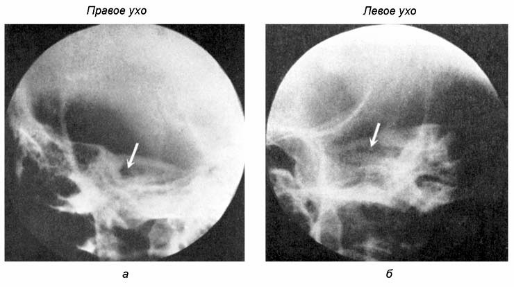

Опухоли уха
Классификация опухолей уха
Казалось бы, злокачественные опухоли уха — заболевание весьма редкое, не заслуживающее столь высокого внимания ведущих специалистов, однако из докладов упомянутых ученых стало известно, что проблема заключается не в частоте заболевания, а в его ранней диагностике, поскольку, к примеру, рак среднего уха в подавляющем большинстве случаев сначала протекает под флагом хронического, осложненного кариесом, грануляциями и холестеатомой, гнойного среднего отита (эпитимпанит), и лишь когда процесс выходит за пределы среднего уха в заднюю или среднюю черепные ямки и пациент приобретает статус безнадежного больного, распознается истинный диагноз этого коварного заболевания. Большинство неоперабельных случаев относятся именно к приведенному примеру.
Классификации опухолей уха могут строиться по тем же принципам, что и опухолей любых других ЛОР-органов: по локализации, по распространенности, по морфологическому строению, по характеру роста и степени малигнизации. Каждый из этих принципов играет определенную роль в общей цепи мероприятий целостного медицинского процесса, в центре которого находится больной человек. Этот процесс подчинен определенному алгоритму, последовательность действий по которому обеспечивает диагностику, определение способа лечения и прогноз.
Клиническая классификация опухолей уха.
1. Опухоли наружного уха. Доброкачественные опухоли наружного уха: доброкачественные опухоли ушной раковины, доброкачественные опухоли наружного слухового прохода. Злокачественные опухоли наружного уха: эпителиома наружного слухового прохода, базально-клеточные неэпидермоидные эпителиомы наружного слухового прохода, саркома ушной раковины.
2. Опухоли среднего уха. Доброкачественные опухоли среднего уха: гломусная опухоль, гемангиомы, остеомы, аденома. Злокачественные опухоли среднего уха: рак среднего уха, саркома среднего уха.
3. Опухоли внутреннего уха: невринома преддверно-улиткового нерва.
Опухоли наружного уха
Любой вид опухоли может возникнуть на любом из элементов наружного уха: на ушной раковине, в наружном слуховом проходе, на барабанной перепонке. Они бывают ограниченными (солитарными) и диффузными, поверхностными или глубокими, доброкачественными и злокачественными.
Доброкачественные опухоли наружного уха
К ним относят себорейные и дермоидные кисты (напротивокозелке и мочке); фибромы (истинные, фасцикулярные, келоидные); невусы (пигментные или сосудистые); кондиломы (в области передней ушной вырезки между надкозелковым бугорком и ножкой завитка); хондрофибромы, часто возникающие у борцов и боксеров в результате фиброза отгематомы; хондромы; папилломы; невриномы; гемангиомы; остеомы (в костной части наружного слухового прохода).
Опухоли ушной раковины развиваются без каких-либо спонтанных субъективных и функциональных симптомов. Исключение составляет болезненная точка, располагающаяся на верхнем крае завитка, которая отличается высокой чувствительностью при малейшем прикосновении.
Опухоли наружного слухового прохода, особенно обтурирующие его просвет (экзостозы, гемангиомы, папилломы, фибромы и др.), или те, которые, достигая барабанной перепонки, вдавливают ее в барабанную полость, причиняют существенные функциональные нарушения в виде ушного шума и понижения слуха по типу звукопроведения. Некоторые мягкотканые опухоли нередко изъязвляются, кровоточат (гемангиомы) и могут подвергаться злокачественному перерождению.
Фибромы обычно возникают в наружном слуховом проходе в виде округлого плотного узла, в ряде случаев на ножке. Эта опухоль относится к соединительнотканным образованиям, включающим фибробласты, фиброциты и коллагеновые волокна. При пальпации такая опухоль безболезненна. Вызывает нарушение слуха по кондуктивному типу.
Злокачественные опухоли наружного уха
Согласно статистическим данным ряда онкологических клиник Европы, в 1957 г. злокачественные опухоли наружного уха составляли 1,35–2,25% всех злокачественных опухолей и 4–8% опухолей кожи (J. Leroux-Robert, A. Ennuyer). Злокачественные опухоли наружного уха в 93–98% локализуются в области ушной раковины и лишь в 3,3–16,6% — в наружном слуховом проходе. По данным Люиса (A. Lewis), из 150 случаев рака уха в 60% наблюдались поражения ушной раковины и в 28% — наружного слухового прохода. Мужчины заболевают раком ушной раковины в 4 раза чаще женщин, в то время как рак наружного слухового прохода возникает у мужчин и женщин одинаково часто. Чаще всего заболевание возникает в возрасте 60–70 лет.
Этиология. Возникновению злокачественных опухолей наружного уха способствуют продолжительная инсоляция, воздействие ионизирующего излучения, травмы. В 77,7% случаев злокачественные опухоли наружного уха возникают на фоне различных заболеваний этого органа (хроническая экзема, псориаз, волчанка, старые рубцы, доброкачественные опухоли).
Патологическая анатомия. Макроскопически злокачественные опухоли наружного уха могут быть представлены тремя формами: солитарная вегетирующая (20%), язвенная (20%), язвенно-инфильтративная (60%). Каждая из этих форм, особенно язвенная, может вторично инфицироваться, осложняясь перихондритом хрящей наружного уха.
По распространению различают четыре степени злокачественных опухолей наружного уха.
1. Опухоль или язва не более 5 мм, захватывающая лишь кожный покров без прорастания в хрящевую ткань.
2. Опухоль, проникающая в хрящ с явлениями его разрушения.
3. Опухоль, поразившая целиком наружное ухо с регионарной аденопатией.
4. Опухоль, вышедшая за пределы наружного уха и давшая метастазы в шейные лимфоузлы.
Гистологически подавляющее большинство злокачественных опухолей наружного уха относятся к эпителиомам. Саркомы в различных своих вариантах возникают редко и только в области ушной раковины. Так же редки и меланомы, а невриномы, гломусные опухоли и злокачественные лимфангиомы встречаются в области наружного уха исключительно редко.
Симптомы и клиническое течение во многом определяются гистологической принадлежностью опухоли.
Спиноцеллюлярные эпидермоидные эпителиомы, самые частые, эволюционируют весьма быстро и локализуются чаще на ушной раковине. Эта разновидность злокачественных опухолей возникает в виде бородавчатого вида образования, вросшего в подлежащую ткань всем основанием, часто кровоточащим при трении о подушку во время сна или неосторожного прикосновения к ушной раковине. J. Leroux-Robert и A. Ennuyer описали три формы эпителиомы ушной раковины:
1) ограниченный ороговевший узел, расположенный на воспаленном основании и развивающийся в течение нескольких лет; 2) язвенно-пролиферативное образование с приподнятыми краями, ворсинчатым дном, покрытым корочками; 3) инфильтративная форма — глубокая язва с неровными краями и кровоточащим дном.
Чаще всего (50%) поражается завиток, затем, по убывающей частоте, противозавиток, задняя поверхность ушной раковины мочка, козелок и противокозелок. Иногда эпителиома распространяется на наружный слуховой проход.
Эпителиома наружного слухового прохода может иметь вид наружного отита (фурункул) с необычно продолжительным течением без тенденции к излечению, либо одиночного почкообразного образования, кровоточащего при дотрагивании, либо длительно не заживающей язвы.
Симптомы злокачественных опухолей наружного уха типичны: помимо описанной объективной картины, следует обращать внимание на такие жалобы больного, как постоянная боль в ушной раковине, больше напоминающая ощущение при ожоге, иррадиация боли в височную область. Вначале боль возникает периодически, преимущественно ночью, затем становится постоянной и нарастает по интенсивности, затем возникают болевые пароксизмы. При локализации опухоли в наружном слуховом проходе больные жалуются на выделения из уха кровянисто-гнойного характера, вслед за которыми появляется болевой синдром (отличие от фурункула наружного слухового прохода). При тотальной обструкции наружного слухового прохода возникает тугоухость на соответствующее ухо.
При спиноцеллюлярной эпидермоидной эпителиоме в наружном слуховом проходе выявляется темно-красного цвета эрозия, напоминающая застойные грануляции, ограниченная в размерах либо распространяющаяся на весь наружный слуховой проход; при ощупывании пуговчатым зондом дна язвы ощущается разрыхленная хрящевая ткань или плотная, с шероховатой поверхностью кость (симптом скребка). После тщательного и осторожного выскабливания кюреткой или острой ложечкой всего патологического содержимого выясняют распространенность опухоли, не исходит ли она из надбарабанного пространства, в котором нередко малигнизируется грануляционная ткань при хроническом гнойном эпитимпаните. Нередко в процесс (метастатический или воспалительный) вовлечены регионарные лимфоузлы и околоушная железа, что проявляется отеком и уплотнением соответствующих областей.
Базально-клеточные неэпидермоидные эпителиомы наружного слухового прохода возникают реже спиноцеллюлярных, отличаются более медленным развитием и более поздним метастазированием. При поражении ушной раковины эта опухоль принимает вид ulcus rodens либо плоской рубцовообразной опухоли в предкозелковой и задней поверхности ушной раковины; при локализации опухоли у основания ушной раковины у места прикрепления к черепу может произойти ее частичная или полная ампутация.
Саркома ушной раковины возникает нечасто, характеризуется медленным развитием, плотной спаянностью с подлежащей тканью, поздним изъязвлением и отсутствием аденопатии. Саркома наружного слухового прохода часто возникает в детском возрасте, отличается пролиферативным ростом, рано прорастает в среднее ухо и проявляется функциональными расстройствами.
Прогноз злокачественных опухолей наружного уха всегда осторожный даже в начальных стадиях этого заболевания, серьезный — при распространенных опухолях в пределах тканей наружного слухового прохода и пессимистичный — при прорастании опухоли в среднее ухо, заднюю или переднюю черепные ямки.
Диагноз устанавливают по внешнему виду опухоли, однако нередко некоторое время это заболевание принимают за осложненную грануляциями экзему наружного слухового прохода или за хронический гнойный средний отит. Более доступны распознаванию опухоли ушной раковины. Окончательный диагноз устанавливают при гистологическом исследовании. Большое значение имеет дифференциальная диагностика, поскольку существует ряд заболеваний наружного уха, сходных по внешнему виду с начальными формами злокачественных опухолей. Так, при возникновении опухоли в области ушной раковины следует проводить дифференциальную диагностику со следующими заболеваниями:
Дискератоз стариков, проявляющийся множественными желтоватыми или коричневыми корочками, локализующимися на различных участках лица и головы;
Отморожения, осложненные болезненными трещинами, язвами, грануляциями;
Экзема, проявляющаяся мокнутием или образованием чешуек, инфильтрацией подлежащей ткани, но не явлением прорастания в нее;
Псориаз, проявляющийся характерной распространенной по всему телу и слизистым оболочкам псориатической эритродермией;
Специфические гранулемы (волчанка, сифилис и др.);
Доброкачественные опухоли.
При злокачественных опухолях наружного слухового прохода их следует дифференцировать со следующими заболеваниями:
Ушной полип, осложнивший хронический гнойный отит среднего уха;
Фистула Желле, возникающая при застарелых хронических эпитимпанитах с кариесом кости и разрушением верхнезадних костных отделов наружного слухового прохода;
Диффузная экзема наружного слухового прохода, проявляющаяся зудом, периодами ремиссии и обострения;
Фурункул наружного слухового прохода, характеризующийся внезапным возникновением, острой болью и другими типичными для него признаками;
Гнойное воспаление околоушной железы, проявляющееся свищом в наружном слуховом проходе и другими признаками;
Доброкачественные опухоли наружного слухового прохода.
Опухоли среднего уха
Опухоли среднего уха — явление редкое, однако при их возникновении обычно возникают значительные проблемы, относящиеся как к диагностике, так и к лечению. Они подразделяются на доброкачественные и злокачественные.
Доброкачественные опухоли среднего уха
Доброкачественные опухоли среднего уха возникают чрезвычайно редко; может быть, поэтому в классических руководствах о них упоминается лишь вскользь. Несмотря на «доброкачественную» структуру, некоторые из этих опухолей близки к злокачественным, кроме того, они могут подвергаться малигнизации; в этих случаях, учитывая близость полости черепа и крупных сосудистых образований, они могут представлять угрозу для жизни больного. К ним относятся гломусная опухоль, гемангиомы, фибромы и остеомы.
Гломусная опухоль
Гломусная опухоль — разновидность параганглиев, представляет собой скопление гормонально-активных и рецепторных клеток, имеющих общее происхождение с ВНС. Различают хромаффинные и нехромаффинные параганглии. Первые ранее объединяли под названием «адреналовая система»; они функционально связаны с симпатическим отделом ВНС, а вторые — с парасимпатическим отделом. Наиболее крупные параганглии — надпочечник (мозговое вещество надпочечника) и поясничный аортальный. Выделяют также гортанный, барабанный, яремный и другие параганглии. К параганглиям относятся скопления хромаффинных клеток в виде гломусов (узелков), в том числе каротидный и надсердечный.

Отдельные гломусные опухоли представляют собой скопления артериовенозных анастомозов, окруженные соединительнотканной капсулой и разделенные на дольки и тяжи. В цитоплазме хромаффинных клеток рассеяны мелкие гранулы, содержащие адреналин или норадреналин. В гломусных опухолях хорошо развита сосудистая сеть; большинство секреторных клеток примыкает к стенкам сосудов. На клетках параганглиев заканчиваются центробежные отростки клеток боковых рогов серого вещества спинного мозга и вегетативных ядер языкоглоточного и блуждающего нервов. Нервные волокна, проникающие в параганглии, заканчиваются хеморецепторами, воспринимающими изменения химического состава ткани и крови.
Важная роль в хеморецепции принадлежит каротидному гломусу, расположенному в области разделения общей сонной артерии на внутреннюю и наружную. Параганглии иногда служат источником развития опухолей — параганглиом и хромаффином, или системных заболеваний типа синдрома Барре1 —Массона, активных гломусных опухолей в системе кровообращения, продуцируют определенные вещества, вызывающие приступы удушья, тахикардию, артериальную гипертензию, повышение температуры тела, сухость кожи, дисменорею, бессонницу, чувство страха и другие явления психоэмоциональной дисфункции, свидетельствующие о влиянии этих веществ на лимбико-ретикулярную систему головного мозга. Многие из этих признаков характерны для гломусной опухоли среднего уха.
В норме яремный гломус представляет собой своеобразный артериовенозный шунт, расположенный в области луковицы яремной вены у яремного отверстия основания черепа (заднее рваное отверстие) и состоящий из сосудистых артериовенозных сплетений. Как самостоятельная нозологическая форма, гломусная опухоль яремного параганглия была выделена в 1945 г. Несмотря на то что по структуре эта опухоль относится к доброкачественным новообразованиям с медленным развитием, она может представлять существенную опасность для соседних жизненно важных органов при своем распространении. Эта опасность обусловлена не только давлением опухоли, но и «едкими» веществами, которые выделяются на ее поверхности и разрушают соприкасающиеся с ними ткани.
Клиническое течение. Гломусная опухоль уха в зависимости от направления ее распространения может проявляться рядом синдромов.
Отиатрический синдром дебютирует появлением пульсирующего дующего шума в одном ухе, изменяющего интенсивность или исчезающего при пережатии общей сонной артерии. Ритм шума синхронизирован с частотой пульса. Затем появляется прогрессирующая односторонняя тугоухость сначала кондуктивного характера, а при инвазии опухоли во внутреннее ухо — и перцептивного характера. В последнем случае возникают и нарастающие по интенсивности вестибулярные кризы, завершающиеся обычно выключением вестибулярной и слуховой функций на одноименной стороне. Имеются признаки наличия в барабанной полости крови или сосудистой опухоли, которые просвечивают через барабанную перепонку в виде красновато-розового или синюшного образования, нередко отодвигающего барабанную перепонку кнаружи. Дальнейшее развитие опухоли приводит к разрушению барабанной перепонки и выходу в наружный слуховой проход опухолевых масс красно-синюшного цвета, легко кровоточащих при зондировании пуговчатым зондом.
При отоскопии выявляется синюшная опухоль мясистой консистенции, занимающая всю костную часть (и более) наружного слухового прохода, плотная и кровоточащая, пульсирующая и вросшая в дефект задневерхней части латеральной стенки надбарабанного пространства, «утопающая» в обильных гнойных выделениях. Опухоль через aditus ad antrum может проникать в клеточную систему сосцевидного отростка, или, при распространении кпереди, — в слуховую трубу и через нее в носоглотку, имитируя ее первичную опухоль.
Неврологический синдром обусловлен прорастанием параганглиомы в заднюю черепную ямку, что вызывает поражение IX, X, XI нервов, обусловливая возникновение синдрома рваного отверстия (syndromus foramini lacerum), через которое эти нервы покидают полость черепа. Этот синдром проявляется парезом или параличом языка на соответствующей стороне, расстройством артикуляции, открытой гнусавостью и попаданием жидкой пищи в нос (паралич мягкого неба), нарушением глотания, охриплостью голоса, афонией. Отиатрические симптомы отсутствуют или незначительны. При прогрессировании процесса опухоль может проникать в область боковой цистерны мозга и вызывать синдром мостомозжечкового угла с поражением лицевого, преддверно-улиткового и тройничного нервов. Мозговое распространение опухоли может инициировать возникновение синдромов Верне и Сикара.
Синдром Верне2 относится к альтернирующим параличам, развивается в результате повреждения пирамидного пути в области продолговатого мозга и проявляется контралатеральным спастическим гемипарезом, гомолатеральным параличом неба и глотательной мускулатуры с расстройствами чувствительности в задней трети языка, а также гомолатеральным параличом добавочного нерва (парез или паралич грудино-ключично-сосцевидной и трапециевидной мышц): затруднены поворот и наклон головы в здоровую сторону, надплечье на больной стороне опущено, нижний угол лопатки отклоняется от позвоночника кнаружи и кверху, затруднено пожимание плечами.
Синдром Сикара3 проявляется невралгией языкоглоточного нерва: внезапная непереносимая кинжальная боль на одной стороне мягкого неба во время употребления твердой, особенно горячей или холодной, пищи, а также при жевании, зевании и при громком разговоре; приступ боли продолжается около 2 мин; боль иррадиирует в язык, челюсти, прилегающую часть шеи и ухо.
Неврологический синдром может проявляться признаками повышения внутричерепного давления (застойные зрительные соски, упорные головные боли, тошнота, рвота).
Шейный синдром напоминает аневризму крупного шейного сосуда и обусловлен наличием пульсирующей опухоли в области бокового отдела шеи.
Клиническое течение гломусной опухоли отличается длительным и медленным развитием в течение многих лет, проходя в нелеченых случаях отиатрическую, неврологическую (поражение периферических нервов), шейную, интракраниальную и терминальную фазы, прорастая в окружающие крупные вены и пространства мостомозжечкового угла.
Прогноз — от осторожного до весьма серьезного, в зависимости от времени диагностики, направления роста опухоли, ее размеров и проводимого лечения. Рецидивы весьма часты.
Диагностика затруднительна лишь на начальных стадиях заболевания, однако пульсирующий шум, один из самых первых признаков гломусной опухоли среднего уха, возникающий и до проникновения образования в его полость, всегда должен настораживать врача в отношении этого заболевания. Существенное значение в диагностике имеют последовательно возникающие кондуктивная тугоухость, признаки кохлеарной и вестибулярной дисфункции, синдром рваного отверстия, шейная псевдоаневризматическая симптоматика, а также описанная отоскопическая картина. Диагностические методы завершаются рентгенографией височных костей в проекциях по Шюллеру, Стенверсу, Шоссе III и II, при которых на рентгенограммах может визуализироваться разрушение барабанной полости и надбарабанного пространства, расширение рваного отверстия и просвета костной части наружного слухового прохода.
При гистологическом исследовании выявляются тесно примыкающие друг к другу полигональные гигантские клетки с разной формы ядрами и кавернозная ткань.
Гемангиомы среднего уха
Гемангиомы среднего уха характеризуются развитием ангиомных образований из сосудов слизистой оболочки барабанной полости и распространением их на окружающие ткани, сопровождающимся их атрофией вследствие давления и функциональных нарушений. Последние зависят от величины опухоли и ее распространения. Обычно это кондуктивный тип тугоухости, при давлении на медиальную стенку барабанной полости и на ее узуры присоединяются перцептивный тип тугоухости и симптомы вестибулярной дисфункции (головокружение, спонтанный нистагм, вестибуловегетативные симптомы). Разрушение медиальной стенки барабанной полости, как и при гломусной опухоли, ведет к параличу лицевого нерва, а выход гемангиомы в область мостомозжечкового угла и боковой цистерны мозга — к поражению нервов слухолицевого пучка и каудальной группы. Указанные признаки имеют много общего с гломусной опухолью, различие заключается в отсутствии пульсирующего шума в ухе, кровоточащих мясистых тканей и отореи в наружном слуховом проходе.
Диагноз ставят на основании клинических признаков и данных отоскопии, при которой через истонченную барабанную перепонку просвечивает бледно-розовое образование. Для диагностики применимы методы ангиографии, при которой сосудистая фаза указывает на размеры участвующих в образовании опухоли сосудов, а тканевая фаза — на ее распространенность. По данным этого метода можно планировать объем хирургического вмешательства и прогнозировать его результат. Применимы также методы рентгенографии, КТ и МРТ.
При гистологическом исследовании выявляют морфологические структуры, характерные для капиллярной (наиболее часто), кавернозной, ветвистой артериальной или венозной гемангиомы, а также для гемангиоэпителиомы.
Прогноз при нераспространенных гемангиомах обычно благоприятен. При обширных гемангиомах, распространяющихся единым блоком в направлении мостомозжечкового угла, к основанию черепа и основной кости с поражением стенок ее пазух, прогноз серьезный.
К редким доброкачественным опухолям среднего уха относятся остеомы и доброкачественные аденомы.
Остеомы среднего уха
Остеомы возникают в скалисто-сосцевидной области, исходной точкой бывает либо одна из воздухоносных ячеек, либо кортикальный слой внутренней полости височной кости. Когда опухоль возникает в области апофиза сосцевидного отростка, она может достигать значительных размеров, заполняя почти всю ретроаурикулярную область. Кожный покров обычно интактен или слегка гиперемирован из-за растяжения венозной сети и застойных явлений.

Остеомы возникают в результате пролиферации межкостной или периостальной соединительной ткани, которая метаплазирует в губчатую кость, покрытую кортикальным слоем, практически не отличающуюся от нормальной костной ткани. Несмотря на то что васкуляризация остеомы незначительна, ее достаточно, чтобы обеспечить растущую опухоль питательными веществами.
Клинически остеомы ничем не проявляются, лишь при значительных размерах приводят к оттопыриванию ушной раковины, что и заставляет пациента обратиться к врачу. Иногда при сдавливании входа в наружный слуховой проход возникает понижение слуха. При возникновении остеомы в барабанной полости и при механическом ее воздействии на звукопроводящий аппарат и окна ушного лабиринта симптомы становятся весьма выраженными: постоянный, нарастающий ушной шум, понижение слуха, вестибулярные расстройства. При распространении остеомы в область луковицы яремной вены в ухе возникает пульсирующий шум дующего характера.
Остеомы эволюционируют многие годы и нередко на каком-то этапе своего развития перестают увеличиваться. Остеомы наружного уха не малигнизируются и не рецидивируют после их удаления.
Диагноз не вызывает затруднений. Показана рентгенография для визуализации размеров и топографии опухоли и выяснения состояния полостей среднего уха и пирамиды височной кости. Рентгенологически остеома визуализируется в виде тени костной контрастности, округлой или овальной, с четко очерченными границами. Опухоль не отграничена от костной ткани, из которой она происходит, а плавно переходит в нее. Если опухоль развивается во внутреннем слуховом проходе, на рентгенограмме выявляется сужение его костного отдела. Остеомы этого отдела наружного уха возникают значительно чаще других и носят название экзостозов наружного слухового прохода.
Аденома среднего уха
Аденома — это доброкачественная опухоль, развивающаяся из эпителия железистых органов и представляющая собой округлый узел, четко ограниченный от окружающей ткани. Различают простые аденомы, в которых преобладает разрастание железистого эпителия, и фиброаденомы, в паренхиме которых преобладает строма.
Аденома среднего уха — заболевание весьма редкое; опухоль развивается из желез слизистой оболочки барабанной полости. Увеличиваясь в размерах, опухоль проявляется теми же симптомами, что и остеома: постоянный шум в ухе, снижение слуха, в некоторых случаях возникают вестибулярные нарушения. Нарушения слуха обусловлены давлением опухоли на барабанную перепонку изнутри, давлением на слуховые косточки, что приводит и к вестибулярным нарушениям, обусловленным вдавлением стремени в преддверие ушного лабиринта и воздействием ее на окно улитки.
С помощью тимпанометрии и импедансометрии устанавливают нарушение звукопроведения. При тимпанотомии обнаруживают опухоль, дислоцирующую цепь слуховых косточек и плотно прилегающую к барабанной перепонке.
Злокачественные опухоли среднего уха
Злокачественные опухоли среднего уха встречаются редко. По сводным статистическим данным Адамса и Морриссона (Adams and Morrisson), собранным в госпиталях Бирмингема за весь период их существования, на 29 727 различных заболеваний уха пришлось всего лишь 18 злокачественных опухолей, или 0,06%. Саркомы среднего уха представляют еще большую редкость. За период с 1925 по 1957 г. во всей специальной литературе опубликован всего 61 случай этого заболевания.
Злокачественные опухоли среднего уха подразделяют на первичные и вторичные. Они поражают в равной пропорции мужчин и женщин; эпителиомы возникают в возрасте 40–50 лет, а саркомы — до 10-летнего возраста.
Первичная опухоль — наиболее частое и типичное заболевание для среднего уха из всех возникающих здесь злокачественных опухолей. Первичный рак может развиваться из эпителия слизистой оболочки барабанной полости, а саркома — из фиброзной ткани надкостницы, причем часто ей предшествуют доброкачественные соединительнотканные опухоли либо длительно текущие гнойные процессы в среднем ухе.
Вторичная опухоль возникает в результате проникновения в него опухолей из соседних анатомических образований (основание черепа, носоглотка, околоушная область) или метастазирования отдаленных опухолей.
Этиопатогенез. Наиболее частая причина рака среднего уха — длительно текущие хронические эпитимпаниты, осложненные кариесом кости и холестеатомой. Bolland и Patterson отмечали эту причину в 57%, а Newheart — в 85% случаев. Способствует возникновению первичных опухолей неоднократное применение раствора нитрата серебра для туширования грануляций в барабанной полости, а вторичных — экземы, экзостозы, доброкачественные опухоли наружного слухового прохода, ведущие к образованию злокачественных опухолей наружного слухового прохода и их распространению в барабанную полость.
Среди причин, обусловливающих возникновение сарком, ряд авторов называют травмы и наличие у новорожденных в надбарабанном пространстве остатков желатинообразной мезенхимальной ткани, рассасывание которой запаздывает, что и приводит к ее злокачественному перерождению. Механизм развития опухолей объясняют метаплазией слизистой оболочки надбарабанного пространства при длительно текущем воспалительном процессе в этой области (Adams и Morrisson, Schliter) или в результате миграции кожного эпителия наружного слухового прохода в среднее ухо через краевую перфорацию барабанной перепонки (Peele и Hauser).
Патологическая анатомия. Самой частой формой рака среднего уха является спиноцеллюлярная эпителиома. Далее следуют базальноклеточные, цилиндроклеточные и железистые эпителиомы. Среди сарком среднего уха различают недифференцированные, фибросаркомы, рабдомиосаркомы, ангиосаркомы, остеосаркомы, лимфоретикулосаркомы.
Клиническая картина. Обычно первые проявления злокачественной опухоли тонут в симптомах хронического гнойного воспаления, а подозрение на наличие опухоли возникает, лишь когда при рентгенографии выявляется нетипично обширное разрушение костной ткани, выходящее за пределы барабанной полости, надбарабанного пространства и пещеры.
Основным симптомом является тугоухость, которая, однако, не патогномонична для злокачественного процесса. Единственный признак, который может насторожить врача, — необычно быстро прогрессирующее понижение слуха вплоть до полной глухоты на одно ухо. Постоянным спутником злокачественных опухолей является ушной шум нетонального характера, а при распространении опухоли в направлении медиальной стенки барабанной полости и окон — признаки вестибулярных нарушений (механическое давление на подножную пластинку стремени, проникновение раковых токсинов через окна) и присоединение перцептивной тугоухости.
Многие авторы считают патогномоничным симптомом злокачественных опухолей среднего уха паралич лицевого нерва. Действительно, в далеко зашедших случаях, когда возникает разрушение фаллопиева канала этого нерва в области медиальной стенки барабанной полости, наступает парез или паралич нерва, однако это осложнение нередко сопутствует и хроническому гнойному процессу среднего уха при кариозном процессе и холестеатоме, так что считать этот признак патогномоничным не следует. Гноетечение, даже сукровичное, также встречается при банальном хроническом гнойном воспалении. Болевой синдром, пожалуй, может сыграть решающую роль в диагностике злокачественного процесса: он отличается особым упорством, не свойственным банальному хроническому отиту; боль носит постоянный глубинный характер, усиливается в ночное время, доходя порой до мучительных пароксизмов. Даже при обильных выделениях из уха эта боль не стихает, а, напротив, неуклонно усиливается.
При отоскопии через полностью разрушенную барабанную перепонку пролабирует в наружный слуховой проход мясистое, красного цвета, образование, обычно «купающееся» в гнойно-кровянистых массах, нередко принимаемое за грануляции. Ощупывание этого образования пуговчатым зондом Воячека выявляет его рыхлость, кровоточивость, зонд практически беспрепятственно проникает в глубокие отделы барабанной полости, содержимое которой представляется в виде гомогенной кровоточащей массы. Ощупывания медиальной стенки зондом лучше избегать, поскольку можно легко проникнуть через деструктивно измененную кость в преддверие или основной завиток улитки и тем вызвать тяжелейший лабиринтит с непредсказуемыми последствиями.
При распространении процесса в ретроаурикулярное пространство здесь можно визуально и пальпаторно определить плотное опухолевидное образование, сглаживающее заушную складку и оттопыривающее ушную раковину. Вторичное инфицирование опухоли приводит к периаурикулярному воспалительному инфильтрату, усилению боли, а эндауральное инфицирование при маляции медиальной стенки — к бурно развивающемуся лабиринтиту и множественным внутричерепным осложнениям.
Иногда злокачественная опухоль среднего уха протекает под видом хронического банального среднего отита, и только при оперативном вмешательстве опытный отохирург может заподозрить в красноватой и плотноватой гомогенной ткани наличие опухоли. Поэтому при оперативных вмешательствах на среднем ухе по поводу хронического гнойного воспаления следует направлять на гистологическое исследование все удаленные патологически измененные ткани.
В развитых случаях опухоли могут осложняться поражением околоушной железы, решетчатой кости, образований носоглотки, ушного лабиринта, пирамиды височной кости, нервных стволов мостомозжечкового угла (синдромы рваного отверстия, Градениго, Колле—Сикара и др.).
Общее состояние больного прогрессивно ухудшается (анемия, кахексия). В нелеченых или инкурабельных случаях больные погибают в состоянии кахексии или в результате таких осложнений, как бронхопневмония, менингит, профузные аррозивные кровотечения из внутренней сонной артерии, сигмовидного синуса или внутренней яремной вены.
Прогноз обычно серьезный или пессимистичный (в связи с часто поздним распознаванием болезни), особенно при саркомах, возникших в детском возрасте.
Диагностика включает анамнез, оценку клинических данных, проведение гистологического и рентгенологического (КТ и МРТ) исследований. Рентгенологическое исследование проводят в проекциях по Шюллеру, Стенверсу, Шоссе II и Шоссе III. На начальных стадиях появляется интенсивное затенение полостей среднего уха без признаков деструкции костной ткани (если эта деструкция не возникла ранее, в результате хронического гнойного эпитимпанита!). Дальнейшее развитие процесса приводит к костным разрушениям, проявляющимся резорбцией костной ткани, неравномерным остеолизом с образованием дефектов с неровными и нечеткими краями.
Дифференциальный диагноз проводят с хроническим гнойным средним отитом, гломусной опухолью и другими доброкачественными опухолями наружного и среднего уха, описанными ранее. Во многих случаях окончательный диагноз злокачественной опухоли возможен только при гистологическом исследовании биоптата, что имеет принципиальное значение как для прогноза заболевания, так и для выработки тактики последующего лечения. Внутричерепное распространение гломусной опухоли с поражением VII, IX и XII нервов значительно затрудняет дифференциальную диагностику.
По мнению C. Păunescu (1964), ушные проявления некоторых системных заболеваний могут симулировать злокачественную опухоль (особенно саркому). К этим заболеваниям относятся лейкозы, лейкосаркоматозы, миеломная болезнь, эозинофильная гранулема и др. Среди этих заболеваний особо отметим синдром Хенда — Шюллера — Крисчена и болезнь Леттера—Сайва (Letter—Siwe).
При первом ушное проявление заболевания часто наблюдается у детей в возрасте 2–5 лет и характеризуется первичной локализацией патологических костных изменений в сосцевидном отростке и может быть принято за саркому. Однако множественные просветления в костях черепа и других костях, наряду с другими симптомами (экзофтальм, гипофизарные симптомы, увеличение печени), служат дифференциально-диагностическими признаками, исключающими злокачественное новообразование.
При болезни Леттера—Сайва — исключительно тяжелом ретикулоэндотелиозе у детей, первичное проявление в области сосцевидного отростка может симулировать саркому, однако типичные для этого заболевания изменения цитологической картины крови, повышение температуры тела, гистологическая картина инфильтрата (моноцитоз, гигантские уродливые клетки) — все это определяет окончательный диагноз.
Опухоли внутреннего уха
Мы применили эту дефиницию, чтобы сохранить единообразие рубрик, составляющих данную главу, однако речь идет об анатомических образованиях, находящихся за пределами внутреннего уха и имеющих непосредственное или опосредованное к нему отношение. К этим «запредельным» образованиям относятся преддверно-улитковый нерв, проходящий во внутреннем слуховом проходе, и мостомозжечковый угол с залегающими здесь черепными нервами, и, если взять шире, — боковая цистерна мозга и понтоцеребеллярное пространство со всеми нервными проводниками, которые составляют слухолицевой пучок и каудальную группу черепных нервов с их стволовыми ядрами. Эта область входит в компетенцию нейрохирургов, мы же остановимся лишь на предмете особой заботы отоневрологов — невриноме преддверно-улиткового нерва.
Невринома преддверно-улиткового нерва
Этому заболеванию посвящено большое количество работ. В последние годы в связи с развитием лучевой и других технологий визуализации опухолевых образований пирамиды височной кости и мостомозжечкового угла, а также видео- и микрохирургических методов клинические проблемы невриномы из чрезвычайно сложных в начале XX в. в наше время стали вполне разрешимыми.
К середине прошлого века невринома преддверно-улиткового нерва по отношению к опухолям головного мозга составляла 9%, по отношению к опухолям задней черепной ямки — 23%, тогда как опухоли задней черепной ямки по отношению ко всем опухолям головного мозга составляли 35%, в то же время невринома преддверно-улиткового нерва составляла 94,6% опухолей боковой цистерны мозга (Егоров Б. Н., 1949; Егоров Б. Г. и др., 1960). Заболевание наиболее часто распознается в возрасте 25–50 лет, однако может возникать и в детском и престарелом возрасте. У женщин встречается в 2 раза чаще, чем у мужчин.

Патогенез. Невринома преддверно-улиткового нерва — это доброкачественная инкапсулированная опухоль, первично развивающаяся во внутреннем слуховом проходе из невролеммы (шванновской оболочки) вестибулярного нерва с дальнейшим ростом в направлении мостомозжечкового угла. Опухоль в процессе своего роста заполняет все пространство боковой цистерны мозга, значительно растягивая и истончая оказывающиеся на ее поверхности черепные нервы мостомозжечкового угла (преддверно-улитковый, лицевой, промежуточный и тройничный), что приводит в этих нервах к трофическим нарушениям и морфологическим изменениям, нарушающим их проводимость, и искажению функций иннервируемых ими органов. Заполняя весь внутренний слуховой проход, опухоль сдавливает внутреннюю слуховую артерию, питающую структуры внутреннего уха, а выходя в область мостомозжечкового угла, оказывает давление на артерии, питающие мозжечок и ствол мозга. Оказывая давление на костные стенки слухового прохода, опухоль вызывает их резорбцию, что является рентгенологическим признаком расширения его, а по выходе в зону верхушки пирамиды — ее разрушение, после чего опухоль устремляется в мостомозжечковый угол, не испытывая в его свободном пространстве ни механических препятствий, ни недостатка в питательных веществах. Именно здесь начинается ее бурный рост.

Большие опухоли смещают и сдавливают продолговатый мозг, мост, мозжечок, вызывая соответствующие неврологические нарушения, обусловленные поражением ядер черепных нервов, жизненно важных центров и их проводящих путей. Маленькие опухоли (2–3 мм) с длительным циклом развития могут протекать бессимптомно и обнаруживаться случайно при биопсии. Такие случаи составляли в прошлом веке до 1,5% (Егоров Б. Г. и др., 1960). В 3% случаев наблюдаются двусторонние опухоли; возникают они, как правило, при распространенном нейрофиброматозе (болезнь Реклингхаузена4). От данной болезни следует отличать синдром Гарднера—Тернера, возникающий при наследственной двусторонней невриноме преддверно-улиткового нерва.

Симптомы и клиническое течение. Классическое деление клинических форм невриномы преддверно-улиткового нерва на четыре периода не всегда соответствует хронологической последовательности появления признаков, характерных для этих периодов. И хотя в большинстве случаев клинические проявления невриномы преддверно-улиткового нерва прямо зависят от темпа роста опухоли и ее размеров, могут встречаться и атипичные случаи, когда ушные симптомы (шум, тугоухость, головокружение) могут наблюдаться при маленьких опухолях и, напротив, когда неврологические признаки, возникающие при выходе опухоли в мостомозжечковый угол, проявляются, минуя отиатрические симптомы.
Различают следующие четыре клинических периода развития невриномы преддверно-улиткового нерва.
Отиатрический период (стадия). Опухоль расположена во внутреннем слуховом проходе, и вызываемые ею симптомы определяются степенью сдавления нервных стволов и сосудов. Обычно первыми проявляются признаки нарушения слуховой и вкусовой функций (ушной шум, тугоухость по перцептивному типу без ФУНГ). На этой стадии вестибулярные симптомы менее постоянны, однако не исключено, что они проходят незамеченными в силу того, что быстро нивелируются механизмом центральной компенсации. Однако при проведении битермальной калорической пробы с видеонистагмографией нередко на этой стадии можно установить признак асимметрии по лабиринту в пределах 15% и более, указывающий на угнетение вестибулярного аппарата на стороне поражения. На этой же стадии при наличии головокружения можно зарегистрировать и спонтанный нистагм, направленный сначала в сторону пораженного уха (раздражение вследствие гипоксии лабиринта), затем в сторону «здорового» уха вследствие сдавления вестибулярной порции преддверно-улиткового нерва. В этой стадии оптокинетический нистагм, как правило, не выявляется.
Иногда в отиатрическом периоде наблюдаются меньероподобные приступы, имитирующие болезнь Меньера или лабиринтопатию вертеброгенного характера.
Отоневрологический период (стадия). Характерной особенностью этого периода, наряду с резким усилением отиатрических симптомов, обусловленных поражением преддверно-улиткового нерва, является возникновение признаков сдавления других черепных нервов, находящихся в мостомозжечковом углу, в связи с выходом опухоли в его пространство. Обычно эта стадия наступает через 1–2 года после отиатрической; характерным для нее являются рентгенологические изменения внутреннего слухового прохода и верхушки пирамиды. Характерными симптомами на этой стадии являются выраженная тугоухость или глухота на одно ухо, сильный шум в ухе и соответствующей половине головы, атаксия, нарушение координации движений, отклонение корпуса в сторону пораженного уха в позе Ромберга. Учащаются и усиливаются приступы головокружения, которым сопутствует спонтанный нистагм и нарушения оптокинетического нистагма.
При значительных размерах опухоли появляется гравитационный позиционный нистагм при наклоне головы в здоровую сторону, обусловленный смещением опухоли в сторону ствола мозга.
В этом периоде возникают и прогрессируют нарушения функции других черепных нервов. Так, воздействие опухоли на тройничный нерв вызывает парестезии на соответствующей половине лица (симптом Барре), тризм или парез жевательной мускулатуры на стороне опухоли (симптом Христиансена). Одновременно наблюдается симптом снижения или исчезновения роговичного рефлекса на этой же стороне. На этой стадии нарушение функции лицевого нерва проявляется лишь парезом, наиболее выраженным для его нижней ветви.
Неврологический период (стадия). В этом периоде отиатрические нарушения отступают на второй план, доминирующее положение начинают занимать неврологические признаки, обусловленные поражением нервов мостомозжечкового угла и давлением опухоли на ствол, мост и мозжечок. К этим признакам относятся параличи глазодвигательных нервов, тригеминальные боли, выпадение всех видов чувствительности и роговичного рефлекса на соответствующей половине лица, снижение или выпадение вкусовой чувствительности на задней трети языка (поражение языкоглоточного нерва), парез возвратного нерва (голосовой складки) на стороне опухоли (поражение блуждающего нерва), парез грудино-ключично-сосцевидной и трапециевидной мышц (поражение добавочного нерва) — все на стороне опухоли. На этой стадии ярко выражен вестибулярно-мозжечковый синдром, проявляющийся грубой атаксией, разнонаправленным крупноразмашистым, нередко ундулирующим нистагмом, завершающийся парезом взора; выражены вегетативные нарушения. На глазном дне — застойные явления с обеих сторон, признаки повышения внутричерепного давления.
Терминальный период (стадия). При дальнейшем росте опухоли в ней образуются кисты, наполненные желтоватой жидкостью; опухоль увеличивается в размерах и оказывает давление на жизненно важные центры — дыхательный и сосудодвигательный, сдавливает ликворопроводящие пути, что повышает внутричерепное давление и вызывает отек мозга. Смерть наступает от блокады жизненно важных центров ствола мозга — остановки дыхания и сердечной деятельности.
В современных условиях третья и четвертая стадии практически не встречаются; существующие методы диагностики при наличии онкологической настороженности врача, к которому больной обращается с жалобами на появление постоянного шума в одном ухе, снижение слуха, головокружение, предусматривают проведение соответствующих диагностических приемов для выяснения происхождения указанных жалоб.
Диагностика невриномы преддверно-улиткового нерва затруднительна лишь в отиатрической стадии, когда в большинстве случаев отсутствуют рентгенологические изменения внутреннего слухового прохода, в то же время у такого больного могут иметься рентгенологические изменения шейного отдела позвоночника, тем более что, по данным А. Абдельхалима (2004, 2005), у каждого второго лица начиная с 22-летнего возраста возникают начальные рентгенологические признаки шейного остеохондроза и жалобы, похожие на жалобы при невриноме преддверно-улиткового нерва. Начиная с отоневрологической (II) стадии опухоль внутреннего слухового прохода практически выявляется во всех случаях, особенно при применении таких высокоинформативных методов, как МРТ и КТ.
Достаточно высокой информативностью обладают рентгенологические проекции по Стенверсу, Шоссе III, трансорбитальная проекция с визуализацией пирамид височной кости.
Дифференциальная диагностика вызывает затруднения при отсутствии рентгенологических изменений внутреннего слухового прохода. Дифференциальную диагностику проводят с кохлеовестибулярными нарушениями при вертебрально-базилярной недостаточности, неврите слухового нерва, стертыми формами болезни Меньера, синдромом Лермуайе5, синдромом позиционного пароксизмального головокружения по Барани, менингиомой и кистозным арахноидитом мостомозжечкового угла. Для квалифицированного проведения дифференциальной диагностики, помимо применения современных лучевых технологий, необходимо участие отоневролога, невролога, офтальмолога.
Определенное значение в диагностике имеет исследование СМЖ. При невриноме преддверно-улиткового нерва количество клеток остается на уровне нормы и не превышает 15 × 10⁶/л, в то же время наблюдается значительное увеличение содержания белка (от 0,5 до 2 г/л и более), выделяемого с поверхности больших неврином, пролабированных в мостомозжечковый угол.
Примечания
1Barré J. A. (1880–1967) — французский невролог; Masson C. de Laurent P (1880–…) — канадский врач. (по: Бабияк и соавт., т. 2, с. 767)
2Vernet M. (1887–1971) — французский невролог. (по: Бабияк и соавт., т. 2, с. 767)
3Sicard R. (…–…) — французский невролог. (по: Бабияк и соавт., т. 2, с. 767)
4Recklinghausen F. D. von (1833–1910) — крупный немецкий патолог. (по: Бабияк и соавт., т. 2, с. 227)
5Lermoyez M. (1858–1929) — французский оториноларинголог. (по: Бабияк и соавт., т. 2, с. 714)
Источники
- Бабияк В. И., Накатис Я. А., Говорун М. И. Оториноларингология. Руководство. Т. 2. — СПб.: Питер, 2009. — Часть VI, гл. 33 «Опухоли уха»: С. 744–767.
- Бабияк В. И., Накатис Я. А., Говорун М. И. Оториноларингология. Руководство. Т. 2. — СПб.: Питер, 2009. — Примечания к главам (сведения об учёных): с. 227, 714.
Раздел «Учебник» — справочная теория, не клинические рекомендации. Тактика ведения пациента — по разборам КР.